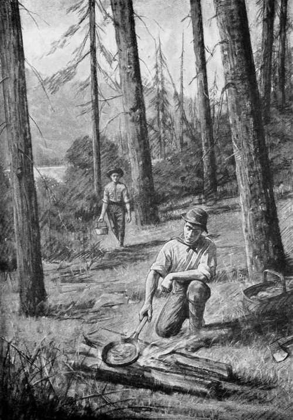

Chapter VIII. Lonesome Pond
Description
This section is from the book "The Boy Scouts of Woodcraft Camp", by Thornton W. Burgess. Also available from Amazon: The Boy Scouts Of Woodcraft Camp.
Chapter VIII. Lonesome Pond
Lonesome Pond was well named. A mile long by perhaps half a mile wide at its widest point, it lay like a turquoise in an emerald setting between two mountains whose upper slopes were dark with a splendid stand of spruce and pine. A magnificent growth of birch, maple and ash with an occasional pine or hemlock scattered among them grew to the water's edge, save along the southern end where they had entered. Here for some distance a sphagnum swamp, dotted with graceful tamaracks, extended on either side of the narrow outlet, in places forming a natural open meadow.
The pond was shallow at this end, with great masses of lily-pads, both of the white and the yellow or cow-lily. In contrast to this the shore of the upper end was bold and rocky, heavily wooded to the water's edge. Here on a tiny patch of shingle, the only break in the rocky shore line, the canoe was beached. A trail led up for a hundred yards into a grove of hemlocks where, completely hidden from the lake, was the camp which was Big Jim's objective point. Two comfortable lean-tos had been built perhaps ten feet apart and facing each other, with a stout windbreak closing one side between the two. The lean-tos were of hemlock bark, peeled from forest giants and flattened to huge sheets. These sheets formed the sides, back and steeply sloping roofs, the entire front of each, after the manner of all lean-tos, being left open. In the middle, between the two, were the charred embers of old fires, while the matted brown needles of small hemlock and balsam twigs in both lean-tos bore mute witness to the spicy, comfortable beds of other campers. A rough board table stood at one side of the fireplace.
" Here we be, pard," said Big Jim as he swung his basket to the ground. " You take this pail an' follow thet trail yonder till you find a spring, while I dig out th' grub. Reckon you must be hungry. We'll hev a bit o' bacon now and a good square meal to-night."
It was long past noon, and now that the excitement of the journey was over Walter realized how empty his stomach was. He found the spring easily, and when he returned Big Jim already had his basket unpacked and was just starting the fire. He had cut two bed logs about six feet long and eight or ten inches in diameter. These he had flattened on top and one side and had placed side by side, flat sides opposite and some three inches apart at one end, spreading to ten inches at the other. Between these he had built a fire of hemlock bark started with birch bark, which, by the way, is as good as kerosene for starting a fire. In a few minutes he had a bed of glowing coals over which the frying-pan was soon sizzling, and that most delicious of all odors, frying bacon, mingled with pungent wood smokers-sailed the boy's eager nostrils.
By making the fireplace and fire in this way, Big Jim explained, the frying-pan rested on an even surface, with a steady even heat beneath it, and one could squat beside it in comfort without becoming unduly heated. At the same time the bacon was cooked thoroughly without scorching.
A kettle of water was set over the coals to wash the tin plates, knives and forks when the meal was over. How good that bacon, bread and butter did taste, washed down by clear cold water I It seemed to the hungry boy that he never had eaten such a meal, its one fault being that there wasn't enough of it. But Big Jim laughed at him, telling him that that was only a lunch, but that he should have a real dinner at sundown.
He Had Built A Fire
When the dishes were cleared away Big Jim took his axe and went back into the woods returning presently with half a dozen forked sticks of green wood. Two of these about four feet long were driven into the ground, one at each end of the fireplace. Across them, supported in the forks, was laid a straight young sapling which the guide called a lug-pole. Then he took one of the other sticks and cut it off about three inches above the fork or crotch, leaving a good hand grasp. One branch was cut off some four inches from the fork, the other branch being left long enough so that when a small nail was driven in the end on the opposite side from the short part of the fork and the fork inverted over the lug-stick a pail hung from the nail would swing just over the coals. Other sticks were made in the same way, but of varying lengths. The camp range was then complete.
The long sticks (they are called pot-hooks) were for bringing a kettle close to the fire, while the shorter ones would allow of keeping things simmering without boiling or danger of burning. Moreover, by simply taking up a pot-hook by the hand grasp a kettle could be moved anywhere along the lug-stick away from the hottest part of the fire without burning the hands. It was simple, quickly made, yet for all top cooking as effective as the gas range at home, and Walter felt that he had learned an important lesson in woodcraft.
After the dishes were cleared away Big Jim led the way to a balsam thicket, taking with him two straight sticks about four feet long, hooked at the lower end. With his axe he rapidly lopped over a mass of balsam twigs, showing Walter how to slip them on to the long sticks so that when he had finished they had two big green spicy cylindrical piles of balsam with a hand grasp at the top to carry them by. Returning to camp Jim rapidly made up two beds. Small boughs were laid first, overlapping so that the butts were hidden. A deep layer of the small twigs were then laid on in the same way and behold ! a bed a king might covet I
About four o'clock the guide told Walter to rig his rod and they would go in quest of their dinner. Paddling over to a cove where several springs fed the lake they drifted idly while the guide studied the various insects on and above the water. Finally he told Walter to rig two flies, a brown hackle for the tail and a professor for the dropper. The boy had already become fairly proficient in getting his line out cleanly and dropping his flies with that lightness which so closely simulates the falling of the living insects on the water. As yet he had seen no indications of fish, but he was impatient to try his luck. Big Jim, however, was lazily smoking, and Walter was forced to be content with admiring the wonderful panorama of lake and mountain spread before him as they idly drifted. Presently there was a splash on the edge of the shadows inshore, and then Walter caught a gleam of silver as another fish broke the mirror-like surface. The fish had begun to rise.
Continue to: